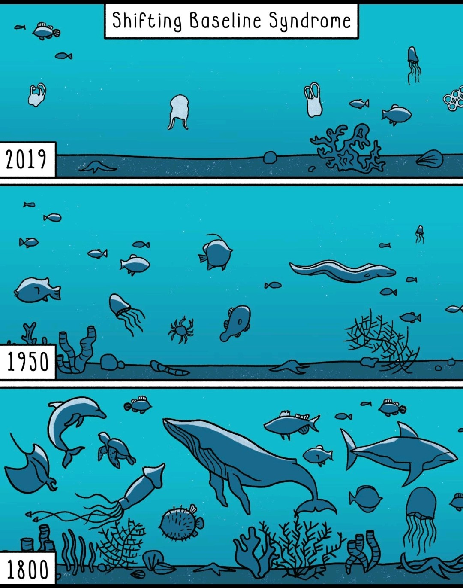

Short biography
My name is Ben Halliwell. I was born in Waterville, Maine and after leaving Maine for military service, I currently live in Dresden, Maine. My wife is a small business owner, a flower farmer, and is in her first commercial season.
- Code Fellows! 2023
- Worked as a financial planner for two years during and after college 2020-2022
- Penn State University with BS in Finance; passed the Certified Financial Planner examination 2020-2022
- Marine Corps 2015-2020
- Restaurant Management 2010-2015
Mt. Blue, Maine

In between finishing my work as a financial planner and starting at Code Fellows, I decided to change course and pursue a career in environmental protection and biodiversity. My goal is to offer everyone the opportunity to see the value of biological diversity and the extent of biodiversity loss in the last 100 years. I don't believe that reports and statistics will effectively illustrate to the public where we are at this time. I believe that technology has a huge part to play in allowing each of us to experience the natural world how it *could* be and compare that to how it currently is.
Biodiversity loss depicted
This goal led me to software development. I want to develop a program that allows anyone, anywhere to see with their own eyes how far we have come in an extremely short period of time. It is my goal to use a combination of photogrammetry and volumetric video to make this a reality and to initially deploy the service to historically significant locations, National Parks, Marine Protected Areas (MPAs), and UNESCO World Heritage sites.
Top Ten Favorite Movies Based on Books ((Year of release); Author)
- The Count of Monte Cristo (2002); Alexandre Dumas
- The Curious Case of Benjamin Button (2008); F. Scott Fitzgerald
- The Fellowship of the Ring (2001); J. R. R. Tolkien
- Pride and Prejudice (1995); Jane Austen
- The Wind in the Willows (1983); Kenneth Grahame
- The Neverending Story (1984); Michael Ende
- Watership Down (1978); Richard Adams
- Bicentennial Man (1999); Isaac Asimov
- The Time Traveler's Wife (2009); Audrey Niffenegger
- Hearts in Atlantis (2001); Stephen King